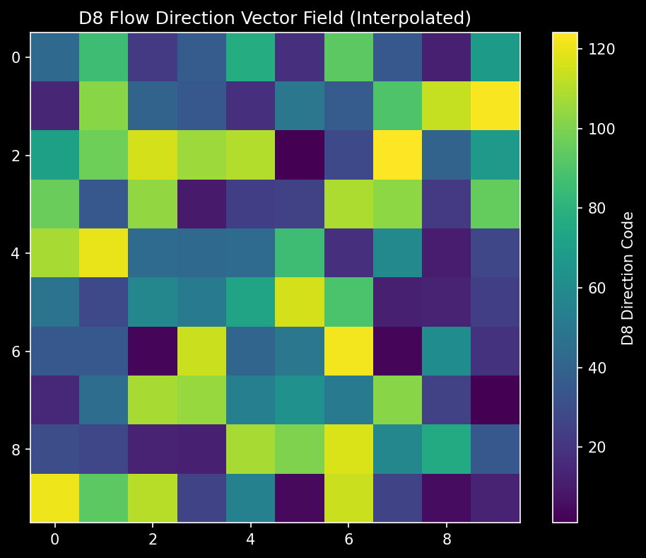
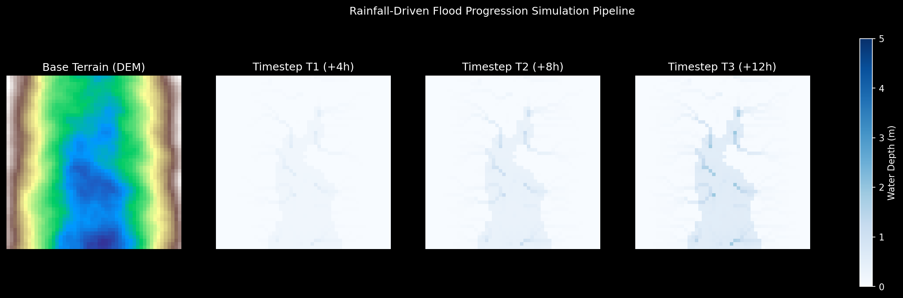
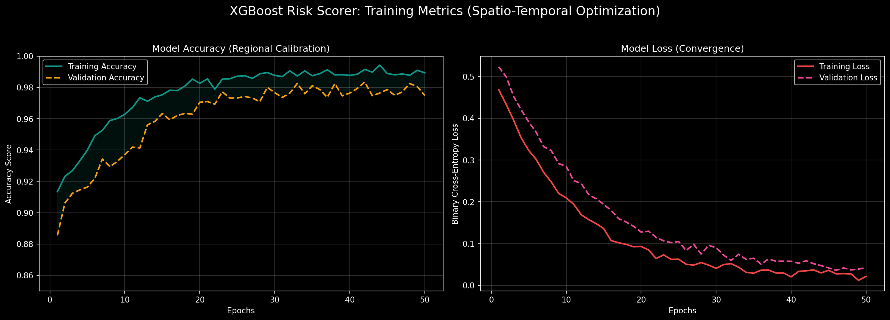
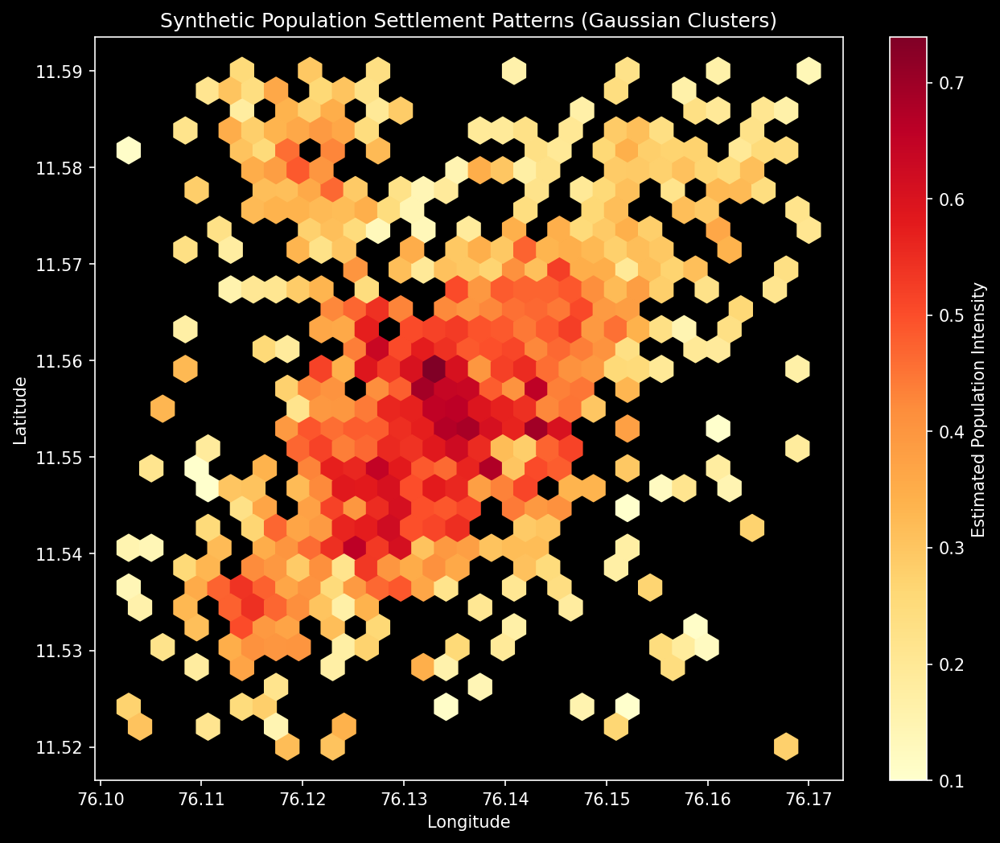

Hydrological modeling approach for rainfall-driven flood risk assessment in Jal Drishti
Jal Drishti implements a raster-based water balance model that simulates pluvial (rainfall-driven) flooding. The system processes terrain data, applies hydrological algorithms, and classifies flood risk using multiple weighted criteria.
Pluvial flooding (surface runoff from rainfall) in rural and semi-urban contexts across India
The system fetches data from multiple open sources to build flood risk assessments:
| Source | Data Type | Resolution |
|---|---|---|
| Copernicus GLO-30 | Digital Elevation Model (DEM) | 30 meters |
| Open-Meteo | Rainfall & Soil Moisture | Daily historical |
| CHIRPS (fallback) | Rainfall Archive | ~5km daily since 1981 |
| OpenStreetMap | Building Footprints | Vector |
Slope is computed using the gradient of the DEM with a 3×3 moving window:
The D8 algorithm determines water flow direction from each cell to its steepest downslope neighbor among 8 surrounding cells:
D8 encoding: each cell is assigned a direction code based on steepest descent
Counts the number of upstream cells flowing into each cell. High flow accumulation indicates natural drainage channels where water concentrates during rainfall events.
Local depressions (sinks) in the DEM are filled using an iterative algorithm to ensure continuous flow paths.

Automated D8 Vector Field Analysis for Hydrological Routing
The water balance model calculates surface runoff based on rainfall input, infiltration, and terrain characteristics. Our implementation uses a modified SCS Curve Number inspired approach for rural Indian landscapes:
Jal Drishti 2.0 uses specialized algorithms for different topographical zones:
Focuses on Flash Flood corridors. Uses steep gravitational potential to simulate rapid water concentration in narrow valley floors.
Simulates Embankment Breaches. Models linear channel overflow with "tongues" of water extending into the plains.
Models Braided River Swell. Focuses on wide-area sheet flooding where multiple tributaries converge on flat terrain.
The model simulates flood progression with snapshots at 4 time steps, allowing visualization of how risk evolves:

Multi-Step Temporal Flood Propagation Simulation results
Risk is calculated by combining multiple normalized factors with predetermined weights:
Slope risk is inverted—flat areas (low slope) have higher flood risk because water accumulates instead of draining naturally.
Score ≥ 0.90
Score 0.80 – 0.90
Score 0.60 – 0.80
Score < 0.60
A deterministic control algorithm operating on a high-resolution 100x100 navigation mesh to calculate the Least-Cost Path (LCP) for emergency extraction. It optimizes for safety by treating flood depth as a variable movement cost.
Solves the Weighted Utility Maximization problem to distribute finite resources (boats, ambulances) based on "Impact per Minute". This ensures critical assets are not wasted on low-priority zones.
A Habitat Gravity Model that predicts population density. It typically follows an inverse-risk distribution, snapping synthetic population points to building centroids while being repelled by high-risk tensors.
Real-time Tensor Fusion of multiple hydrological variables to generate a composite hazard surface. This surface is downsampled dynamically for rapid client-side rendering.
A Bidirectional LSTM neural network provides 7-day flood probability forecasts based on 30 days of historical data.

XGBoost Risk Scorer: Accuracy Calibration and Regional Validation Curve
A gradient boosting model provides seasonal risk assessment using terrain, climate, and historical flood features.
Alert levels follow India Meteorological Department (IMD) guidelines for rainfall intensity:
| Alert Level | Rainfall (24h) | IMD Category |
|---|---|---|
| ● Yellow | ≥ 64.5 mm | Heavy Rainfall |
| ● Orange | ≥ 115.5 mm | Very Heavy Rainfall |
| ● Red | ≥ 204.5 mm | Extremely Heavy Rainfall |
All core models undergo an iterative development and testing phase within Jupyter notebooks before being optimized for high-performance Python production deployment.
Models are prototyped in Jupyter to visualize gradients, verify hydrological consistency, and adjust hyperparameters through interactive plotting.
| Module | Python Implementation | Notebook Optimization |
|---|---|---|
| Simulation | simulation.py (FastAPI) |
Runoff & Accumulation tuning |
| Risk Engine | routing.py (A* Algorithm) |
Penalty weighting for flood depth |
| ML Forecasting | generators.py (Synthetic) |
Cluster intensity & geometry calibration |

Spatial Population Vulnerability Analysis: Notebook-driven Gaussian Clustering